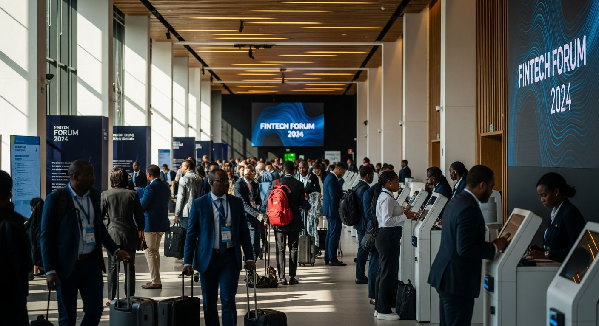
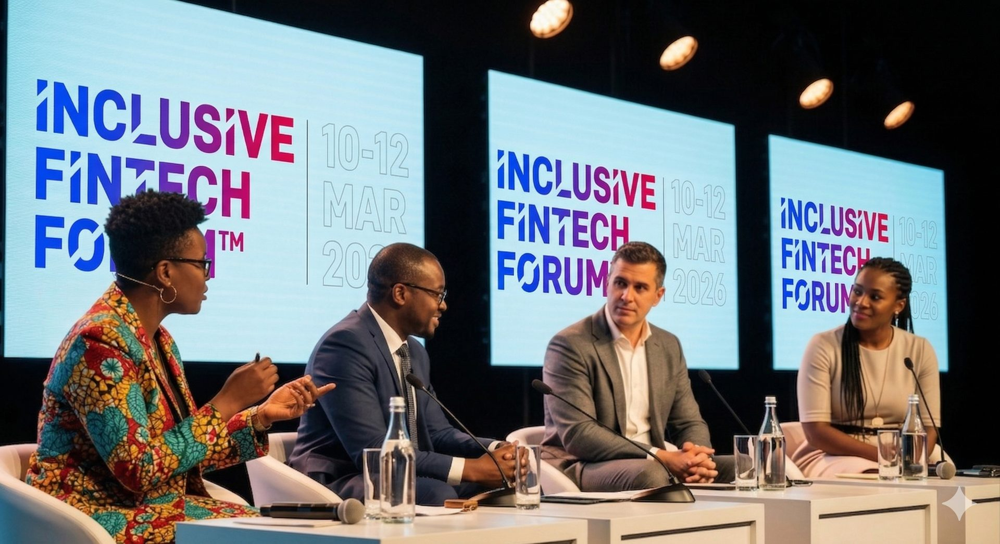
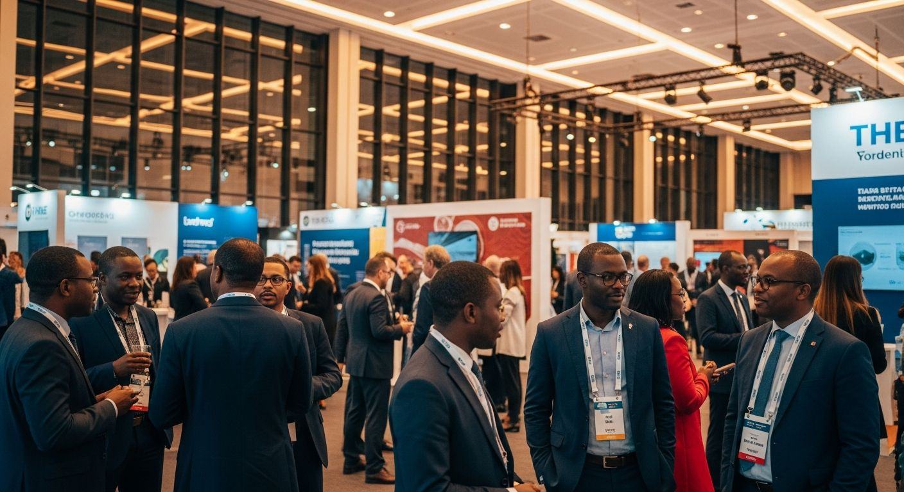
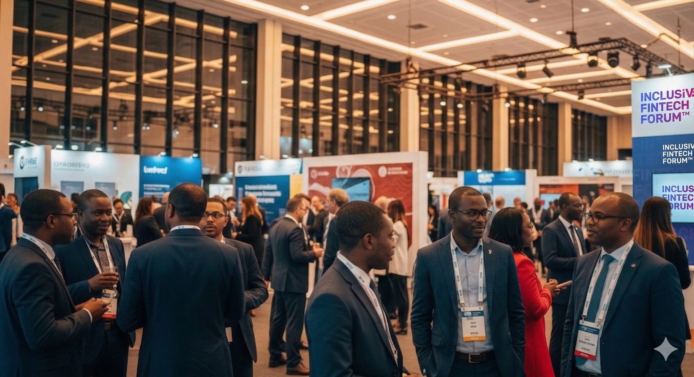
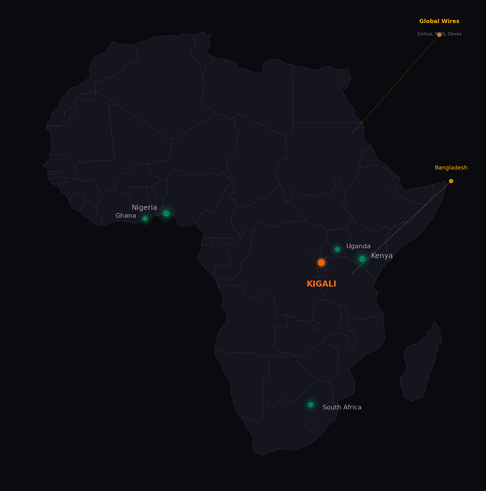

How ACG delivered integrated PR and social media coverage for the Inclusive FinTech Forum 2026, achieving a 20.77% engagement rate across 212 posts and securing coverage in 10+ countries.

The Inclusive FinTech Forum is Africa's premier convening for financial inclusion and digital finance, bringing together regulators, fintechs, DFIs, and policymakers at the Kigali Convention Centre.
For 2026, IFF needed a communications partner who could do more than post updates.
The brief was clear: build pre-event anticipation through targeted media outreach, deliver high-cadence live social coverage across LinkedIn, X, and Facebook during the three-day forum, coordinate broadcast media access, and extend the story beyond the closing session.
The challenge was scale and speed. Over 200 sessions, 150+ speakers, and a politically complex stakeholder landscape spanning regulators, private sector, and development finance. Every piece of content needed to be accurate, timely, and strategically aligned.

Pre-event (2 weeks out)
Targeted press release distribution to tier-one outlets across Africa. A speaker spotlight series on LinkedIn. Countdown content to build audience anticipation. 14 articles were placed before Day 1.
Event days (March 10-12)
A dedicated social team published 115 posts across three platforms in three days, covering panels, keynotes, hallway conversations, and breaking announcements in real time. Broadcast media coordination secured five Channels TV segments and two EAMG TV features.
Post-event
Follow-up features, recap content, and syndication through major wire services extended the coverage tail beyond the forum closing.
"The three-day event window produced 42% of all impressions and 53% of all engagements, confirming that live, high-cadence posting during forums is the single highest-ROI activity."

March 10 was the peak day, with LinkedIn alone recording 10,580 engagements. The engagement rate during the event period reached 25.79%, reflecting heightened audience attention and a reinforcing loop between social content and press coverage.

ACG's phased PR strategy secured placements across print, online, and broadcast outlets spanning Africa, Asia, and global wire services.

Kigali Convention Centre, Rwanda
10-12 March 2026 · 3,000+ delegates
All 52 articles were coded as positive or neutral in tone. The dominant narrative frame was financial inclusion, appearing in 95% of coverage.
The absence of negative coverage reflects both the forum's positive framing and ACG's strategic message discipline. Key themes aligned directly with IFF's stated objectives.
72% of impressions, 83% of engagements, 23.9% engagement rate. For IFF's professional audience, LinkedIn is not just a channel; it is the channel.
520 shares and strong conversation during event days. Effective for real-time amplification, journalist interaction, and extending reach beyond owned audiences.
42% of impressions and 53% of engagements in 3 days. The event itself is the content engine. Everything before and after supports this window.
ACG delivers integrated PR, social media, and strategic communications across Africa. From three-day forums to year-long campaigns, we turn events into narratives that move audiences.
Get in touch →
Three platforms. One dominant channel.
LinkedIn drove 72% of impressions and 83% of engagements. X amplified in real time. Facebook confirmed what the data already suggested.
LinkedIn
X (Twitter)
Facebook